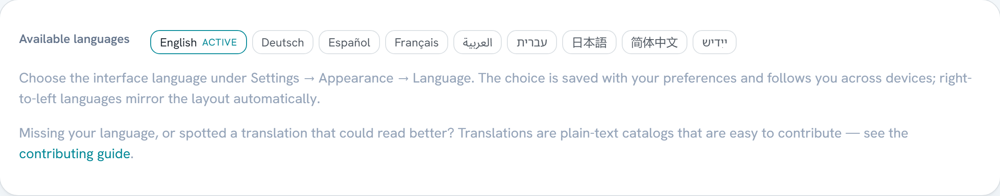

Contributing to Aqualink Automate¶
For contributors sending pull requests. Covers the branch model, the Conventional Commits format used in this repo, and what to run before you push. Building from source lives in INSTALL.md.
These are the guidelines we ask you to follow:
- Git workflow
- Submitting a pull request
- Merging
- Commit message format
- Allowed types and scopes
- No attribution trailers
- Release tagging
- Building and testing before you push
Security: do not report security vulnerabilities as normal issues or pull requests. Follow the private process in SECURITY.md instead.
There is no pull request or issue template in this repository — this guide is self-sufficient, so follow it directly.
Git workflow¶
The repository has two core branches:
| Branch | Purpose |
|---|---|
main |
Production. Released, tagged code only. |
develop |
Integration branch. All non-hotfix work merges here first. |
The normal flow is develop -> main: features land on develop, and when a release is cut, develop is merged into main and a tag is created on main (see Release tagging).
Branch naming¶
Create one branch per change, named <type>/<name>, where <type> is one of the allowed commit types — feat, fix, docs, ci, test, refactor, chore, build, or perf — and <name> is a short lowercase, hyphen-separated description.
git switch develop
git switch -c feat/spaside-led-map # a new feature
git switch -c fix/heater-setpoint-decode # a bug fix
This convention is checked automatically:
- A Branch Name check runs on every pull request and fails a non-conforming head branch (
.github/workflows/ci.yml).developandmainare accepted as heads so thedevelop->mainrelease-promotion PR is never blocked, anddependabot/**heads are accepted because Dependabot's branch names are not configurable. It is a required status check ondevelopandmain, so a non-conforming branch cannot merge. - Push/creation-time enforcement (a server-side branch-name ruleset) is a GitHub organization feature and is not available on this user-owned repository, so a misnamed branch can exist locally — it just fails CI and, once the check is required, cannot merge.
Continuous integration builds on a push only to the long-lived branches main and develop. Feature branches build via their pull request into develop/main instead — so a work-in-progress push to a branch that has no open PR runs no CI (see .github/workflows/ci.yml).
Hotfix branches¶
A hotfix is an urgent fix that must reach production without waiting for the next develop release. Branch a hotfix off main:
A hotfix merges into main (which is then tagged) and is also merged into develop so the fix is not lost on the next release.
Worktrees for parallel work¶
To work on more than one branch at a time on a single machine — or to fan work out across parallel agents — use git worktrees rather than juggling one checkout. The worktree layout, naming, and a recipe for building a worktree cheaply (reusing the main checkout's vcpkg instead of duplicating it) are in docs/worktrees.md.
Submitting a pull request¶
For a non-hotfix change:
- Branch off
develop(for examplefeat/my-new-feature). - Make your change, including appropriate test cases, and update any documentation the change affects (see Keeping documentation in sync).
- Run the full test suite and confirm it passes — see Building and testing before you push.
- Commit using the Conventional Commits format.
- Open a pull request targeting
developand address any review feedback.
For a hotfix change:
- Branch off
main. - Open a pull request targeting
main. - After it merges to
main, also merge the fix intodevelop.
Every pull request must include test coverage for the change and must pass the full suite. CI runs the C++ build and tests, the Playwright UI end-to-end specs, the Matter bridge checks, and a Docker image verification on each pull request. See docs/ci-cd.md for the catalogue of what runs and where, and .github/workflows/ci.yml for the authoritative list of PR checks.
Merging¶
The default is Squash and Merge into develop. A single squashed commit per feature or bug fix keeps history readable and makes it straightforward to revert one change in isolation.
Before merging, set the pull request title to a valid Conventional Commit — the squash commit uses the pull request title as its subject.
If a pull request bundles several distinct features or fixes, use your judgement:
- Squash and Merge collapses everything into one commit on
develop. - Create a merge commit preserves the individual commits from your branch.
Prefer Squash and Merge unless preserving the separate commits adds real value.
Commit message format¶
This project uses Conventional Commits. Each commit message has this shape:
- type — required. One of the allowed types.
- scope — optional. The area of the codebase affected, in parentheses. Multiple scopes are comma-separated.
- subject — required. A short, imperative, present-tense summary on the first line ("add", not "added" or "adds"). No trailing period; keep it under about 72 characters.
- body — optional. Explains the motivation and what changed, in present tense. Separate it from the subject with a blank line.
- footer — optional. References issues (for example
Closes #42) and records breaking changes.
Real examples from this repository:
fix(cicd): keep runner thin disks lean with discard + hourly fstrim
ci(codescanning): scan only new code; skip the develop->main duplicate
test(integration): expect median-smoothed hub salt in transitions replay
refactor(webui): give Schedules form inputs their own .sched-input class
feat(webui,jandy): tailored device cards, robust command dispatch, RSSA presence-gating fix
docs(spaside): mark the iAQ spa-switch writer IMPLEMENTED
A complete message with a body and footer:
fix(chlorinator): smooth AquaRite salt/health flapping
The reported salt concentration flapped between adjacent samples because
each raw reading was published unfiltered. Apply median smoothing before
writing to the DataHub and surface cell warnings.
Closes #57
Breaking changes¶
Mark a backward-incompatible change with a ! before the colon, and describe it in a BREAKING CHANGE: footer:
feat(api)!: rename expected_auxillary_count to expected_aux_count
BREAKING CHANGE: the /api/equipment response field expected_auxillary_count
is renamed to expected_aux_count. Update any client that reads it.
Reverts¶
To revert a previous commit, use the revert type and name the reverted subject and hash in the body:
revert: feat(webui,jandy): tailored device cards and robust command dispatch
This reverts commit a1b2c3d. The command-dispatch change regressed the
OneTouch home page; reverting until the RSSA gating is fixed.
Allowed types and scopes¶
Use one of these types. Put the area of the code in the scope, not the type.
| Type | Use for |
|---|---|
feat |
A new feature or capability. |
fix |
A bug fix. |
docs |
Documentation only. |
ci |
CI/CD workflows, GitHub Actions, runner configuration. |
test |
Adding or correcting tests. |
refactor |
A code change that neither fixes a bug nor adds a feature. |
chore |
Maintenance, tooling, dependencies, housekeeping. |
build |
Build system, CMake, vcpkg, packaging. |
perf |
A change that improves performance. |
Scopes name the affected area and are free-form, but stay consistent with what history already uses. Common scopes include jandy, pentair, webui, chlorinator, cicd, matter, spaside, iaq, http, and integration. Combine scopes with commas when a change spans areas, for example feat(webui,jandy): ....
Important: older commits use ad-hoc prefixes such as jandy:, release:, spaside:, epump:, core:, and docker: as the type. These are not valid Conventional Commit types — they are scopes. Use a type from the table above and move the area name into the scope: write fix(jandy): ..., not jandy: ....
No attribution trailers¶
Do not add attribution or co-authorship trailers to commit messages, pull request descriptions, or any generated text. This includes Co-Authored-By: lines and any equivalent "co-authored" or attribution statement. This is a hard project rule — keep commits and pull request bodies free of attribution trailers.
Release tagging¶
Releases are tagged on main using a plain semantic-version tag prefixed with v — for example v1.0.0, or a prerelease such as v1.0.0-beta.1. Pushing a v* tag triggers the release pipeline (.github/workflows/release.yml), which builds, packages, publishes the Docker image, and creates the GitHub release. The pipeline rejects any tag that is not a valid v<MAJOR>.<MINOR>.<PATCH>[-(alpha|beta|rc).<N>] and requires the tagged commit to be contained in main.
Do not use the old release-YYYYMMDD-vX.Y.Z naming — it is not what the pipeline matches.
For the full version scheme, prerelease labels, and the step-by-step release procedure, see docs/releasing.md. Most contributors do not tag releases.
Building and testing before you push¶
Build the project and run the full test suite before opening a pull request. The repository ships convenience build scripts and CMake presets; the full setup, prerequisites, and per-platform notes are in INSTALL.md.
Configure, build, and test with the matching presets (replace config-/build-/test- to pick the platform preset listed in INSTALL.md):
cmake --preset config-linux-gcc
cmake --build --preset build-linux-gcc
ctest --preset test-linux-gcc
On Windows the equivalent presets are config-windows-msvc-debug, build-windows-msvc-debug, and test-windows-msvc-debug.
All tests must pass and your change must include tests covering it. A bug fix must add a regression test that fails before the fix and passes after it.
If you touch the RS-485 message decoders (src/jandy/messages/**, src/pentair/messages/**, the generators/factories, or the framing/checksum paths), these parse untrusted wire data and are additionally fuzzed — see docs/fuzzing.md for the libFuzzer harnesses, how to run them locally, and the "a crash is a real bug, never weaken the parser" discipline. The test_protocol_fuzz_smoke.cpp unit test guards these paths in the normal suite even without a Clang build.
Platform-specific code¶
The operating system is a CMake decision, not a preprocessor decision. Code that differs by OS goes in src/core/platform/<os>/ behind a shared header and is selected by the if(WIN32)/if(LINUX)/if(APPLE) blocks in src/core/CMakeLists.txt — never behind an #ifdef _WIN32/#elif !defined(__APPLE__) in shared code. The full principle, the add-a-platform-function workflow, and the allowed exceptions (compiler/arch/build-feature macros) are in docs/platform-isolation.md. The Platform Macros CI check (scripts/check-os-macros.ps1) blocks a PR that introduces an OS macro into shared code.
Keeping documentation in sync¶
Documentation is part of the change, not a follow-up. When a pull request alters observable behavior, update the doc that describes it in the same pull request — a doc that contradicts the code is treated as a defect in review.
In particular:
- HTTP routes, WebSocket events, or JSON schemas → update
assets/web/api/swagger.yamland docs/usage-and-api.md. - CLI flags, config keys, or defaults → update docs/configuration.md (and the area-specific guide: MQTT/Home Assistant, hardware, Raspberry Pi).
- Auth, TLS, or networking defaults → update docs/SECURITY.md.
- CI workflows, Packer/runner images, release flow → update docs/ci-cd.md / docs/releasing.md.
- Build presets or install steps → update docs/INSTALL.md.
- Wire-protocol opcodes or message types → update the relevant protocol doc under
docs/. - Web UI appearance (layout, theme, navigation, new/renamed views or controls, auth screens, the language list) → regenerate the affected screenshots (see below).
Prefer durable references (symbols, route URLs, option long-names, section headings) over bare file.cpp:NNN line numbers, which rot as soon as code is inserted above them. The analysis/roadmap docs (docs/design/async_migration_*.md, docs/design/cicd-redesign.md) are dated snapshots — do not treat their line citations as current truth.
Documentation screenshots¶
The PNGs in docs/assets/ are embedded in the README and the docs (index.md, usage-and-api.md, SECURITY.md, this file) and are held to the same standard as prose: a screenshot showing a UI that no longer exists is a doc defect. They are not hand-taken — scripts/capture-doc-screenshots.js captures every one of them from the real binary replaying the recorded RS-485 fixtures (the same harness as the Playwright e2e suite).
When your change alters what an embedded screenshot shows, regenerate and commit the affected images in the same pull request:
npx playwright install chromium # once
AQUALINK_EXE=<path-to-built-binary> node scripts/capture-doc-screenshots.js
# or a subset: ... capture-doc-screenshots.js --only hero,trends
When you add a UI surface worth documenting, add a capture to the script rather than committing a one-off manual screenshot — manual captures cannot be regenerated by the next person and rot silently.
Contributing translations¶
The web UI is fully internationalized: every user-visible string resolves through a per-language catalog, and adding or improving a language never touches C++ or the build system. The full mechanics are in docs/i18n.md; this section is the contributor workflow. Translation-only pull requests are very welcome — the shipped non-English catalogs were machine-translated and reviewed for structure, so native-speaker improvements are genuinely valuable.

Improving an existing translation¶
Catalogs are plain JavaScript files under assets/web/i18n/<code>.js — one flat 'namespace.key': 'string' map per language. To improve a translation, edit the value (never the key) and open a pull request typed fix(webui).
Rules — CI enforces the structural ones:
- Keep every
{placeholder}name exactly as it appears in the English value. They are substituted at runtime; the word order around them is yours to change freely. - Keys ending in
_htmlcontain markup: translate the prose, keep the tags and attributes byte-for-byte. - Plural keys carry CLDR category suffixes (
.one,.other); translate each form per your language's plural rules, and do not add or remove suffixes. - Leave technical tokens untranslated: product names (AquaLink, Home Assistant, MQTT, Matter), protocol terms (RS-485, WebSocket), wire enum values quoted inside error text, and the built-in
Guestgroup name where it names that group. - Match the file's existing tone and terminology — each catalog keeps a consistent register (e.g. German uses Sie-form; French uses the typographic apostrophe).
Verify before pushing:
The checker confirms every language carries exactly the English key set and that every placeholder survived translation. The i18n-catalogs CI job runs the same script on every pull request, and the Playwright i18n suite additionally fails on any string that bypasses the catalog.
Adding a language¶
- Copy
assets/web/i18n/en.jstoassets/web/i18n/<code>.js(lower-case BCP-47 language code), change the registration line's locale code, and translate the values following the rules above. - Register the locale in
SUPPORTED_LOCALESinassets/web/scripts/i18n.jswith its own-language name (endonym — deliberately shown untranslated so users can always find their own language) and its text direction (ltr/rtl). PinnumberLocaleif the bare code's default numbering system is wrong or inconsistent across engines (see thearentry). - If the language uses a script the shipped fonts do not cover, add font coverage per "Fonts and scripts" in docs/i18n.md: a
unicode-range-sliced vendored Noto subset (the Arabic/Hebrew pattern) or ahtml[lang='xx']system-font stack (the Japanese/Chinese pattern), plus an e2e font-load assertion if vendored. - Run the checker (above) and the Playwright i18n suite (
npx playwright test e2e/i18n.spec.ts— see docs/i18n.md for the harness prerequisites). The key-parity and zero-missing-key tests pick the new locale up automatically from the registry. - Open a pull request typed
feat(webui). Nothing else needs wiring: the build packagesassets/webrecursively, the language picker and the About page render from the registry, and the service worker caches the catalog on first use.
RTL languages need no extra layout work — the stylesheets use logical properties throughout, and the document direction flips from the registry's dir field. If you spot a component that fails to mirror, that is a bug worth reporting on its own.